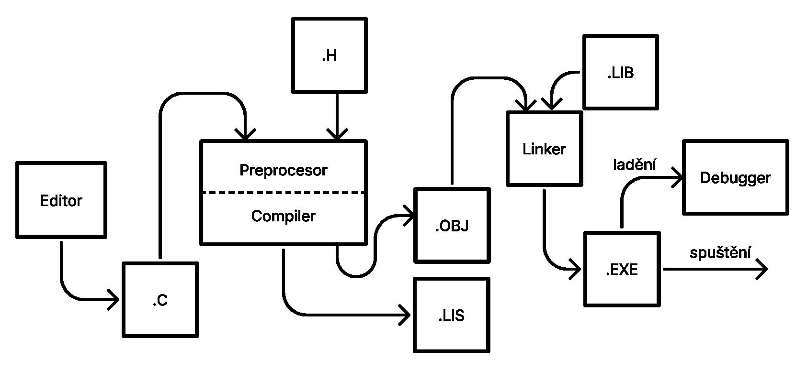

16. Základy jazyka C++
Z editoru jde kód který píše programátor, syntaxí c++ se svými úpravami, stylováním/odřádkováním, komentáři a popřípadě dokumentací jednotlivých funkcí. Všechen tento kód je uložen do souboru s koncovkou .cpp, který je následně poslán do kompilátoru. Než se však do kompilátoru dostane, projde přes preprocesor, který ke kódu připojí hlavičkové soubory s kocovkou .h. Poté se kompilátor postará o přeložení kódu do strojového kódu, který uloží do souboru s kocovkou .o nebo .obj. Jedná se o objektový soubor, který drží zatím pouze přeložený strojový kód a nelze zatím nijak spustit. Dále je vygenerován soubor .lis, který v sobě uchovává veškeré chyby a nedokonalosti, které se při kompilaci kódu vyskytly. Soubor .o nebo .obj je následně poslán do linkeru, ve kterém se připojí veškeré knihovny, které program potřebuje a linker ví, kde je najít. Dále už z linkeru vyjde spustitelný soubor .exe, který může ještě procházet skrze ladící program, který umožňuje zastavit chod programu v určitý moment a je možné sledovat veškeré proměnné v určitý moment chodu programu.
Základní typy proměnných
Text (char, wchar_t): Může reprezentovat jedno písmeno/znak (A, $). Nejvíc základní typ je char, který se ukládá pouze do jednoho bytu. Jiné datové typy mohou poskytnout místo pro více písmen/znaků(wchar_t).
Celá čísla(int): Mohou ukládat celá čísla(7, 1245), mohou mít různorodé velikosti i například podle toho jestli je proměnná long, signed nebo unsigned, poté záleží pouze na tom, jestli chceme, aby se do proměnné ukládalo číslo s mínusovou hodnotou nebo ne.
Čísla s desetinnou čárkou(float, double): Čísla s desetinnou čárkou jsou uložena v datových typech float nebo double, lze také učit požadovanou přesnost desetinných míst.
Boolean(bool): V C++ zkrácený bool může reprezentovat pouze dva stavy, a to true nebo false.
Druhy cyklů
for
Používá se k určitému počtu opakování bloku kódu. Skládá se z proměnné určující číslo cyklu, podmínky, která určuje kdy se má cyklus zastavit a iterace proměnné čísla cyklu.
while
Cyklus opakující blok kódu pokud jsou na počátku cyklu splněny všechny podmínky.
do .. while
Cyklus opakující blok kódu pokud jsou na konci cyklu splněny všechny podmínky.
vnořený cyklus
cykly jde vnořovat do sebe, pokud k tomu dojde, nejdříve se prochází cykly vnitřní a poté se postupně program dostává k cyklům vnějším.
Klíčové příkazy cyklů
Break: přeruší momentální cyklus
Continue: přeskočí momentální cyklus
goto: v novodobém programování odsuzovaná funkce, slouží k poskakování mezi řádky programu podle daného označení (label)
Příkazy pro větvení programu
if
slouží k určování podmínek, pokud se podmínka splní(je pravdivá), program vykoná blok kódu, pokud ne tak program pokračuje dál a to buď na blok kódu else nebo další příkazy.
else
slouží jako podmínka která se vykoná pouze pokud se nesplní tvrzení v bloku if
switch
uchovává v sobě bloky kódu označené čísly nebo písmeny, podle toho jaký je zadán vstup se vykoná příslušně označený blok kódu. (blok kódu-case, každý case musí být ukončen slovem break)
Logické operátory
s pomocí logických operátorů lze řetězit podmínky za sebe
AND( && ) : aby byla podmínka pravdivá je zapotřebí, aby byly pravdivé všechny tvrzení
| A | B | A && B |
|---|---|---|
| pravda | pravda | pravda |
| pravda | nepravda | nepravda |
| nepravda | pravda | nepravda |
| nepravda | nepravda | nepravda |
OR( || ) : aby byla podmínka pravdivá stačí, aby bylo pravdivé pouze jedno tvrzení
| A | B | A || B |
|---|---|---|
| pravda | pravda | pravda |
| pravda | nepravda | pravda |
| nepravda | pravda | pravda |
| nepravda | nepravda | nepravda |
Negace( ! ) : obrátí výsledek tvrzení, pokud je pravdivé stane se z něj lživé a naopak.
Aritmetické operátory
| + | sčítání |
| - | odčítání |
| * | násobení |
| / | dělení |
| % | modulo (zbytek po dělení) |
Složené přiřazení
x += y → x = x + y
x -= y → x = x - y
x *= y → x = x * y
x /= y → x = x / y
x %= y → x = x % y
Inkrementace a Dekrementace => x++, x--, ++x, --x
Relační operátory <, >, <=, >=, ==, !=
Datové proudy (cin,cout)
O tuto funkci se stará knihovna iostream, která slouží k ovládání veškerého vstupu a výstupu, ale také třeba logování, posílání chyb, čtení a zápis do souborů.
Cin slouží k získání uživatelského vstupu. Zapisujeme jej cin >> proměnná.
Cout slouží k výstupu programu, tedy veškeré zprávy, které program uživateli poskytuje. Zapisujeme cout << proměnná.
Šipky při zápisu datových proudů slouží k určení směru proudu, v případě cin tedy z objektu do proměnné a v případě cout z programu do objektu datového proudu.
Generace náhodného čísla
O generaci náhodného čísla se starají v c++ dvě funkce, z knihovny cstdlib, srand() a rand(). Nejdříve musíme inicializovat random seed funkcí srand(time(NULL)) s parametrem času, který získáme přidáním knihovny ctime a ten nám zajistí jistou náhodnost tohoto seedu. Poté již funkce rand() může vygenerovat náhodné číslo mezi hodnotou 0 a RAND_MAX.
Definice funkce
Funkce musí mít definovaný prototyp na začátku souboru. To znamená, že musí být znám návratový typ funkce, název funkce, datové typy a počet parametrů parametrů, které ovšem nemusí být pojmenovány. Definice těla funkce není v prototypu nutná. Poté můžeme funkci definovat na konci souboru, pod funkcí main, nebo můžeme všechny funkce definovat na místo vytváření prototypů na počátku souboru.
Rekurze
Jedná se o zacyklení funkce. Takováto funkce je volána sama na sebe, to znamená, že funkce se sama na sebe odkazuje ve svém těle. Je ovšem nutná podmínka, při které se cyklus rekurze ukončí a metoda vrátí konečnou hodnotu, v opačném případě by se funkce dostala do nekonečného cyklu.
#include
<iostream>
using namespace
std;
void
numberFunction(int
i) {
cout <<
"The number is: " << i <<
endl;
i++;
if(i <
10) {
numberFunction(i);
}
}
int main() {
int i =
0;
numberFunction(i);
return
0;
}
Práce se soubory
Pro čtení nebo zápis do souboru je třeba soubor nejprve otevřít pomocí jednoho z objektů ofstream nebo fstream (ifstream pro otevření souboru pouze pro čtení). Na jeden z těchto objektů si poté zavoláme metodu open() a do parametrů napíšeme lokaci a název souboru a můžeme přidat mód, ve kterém chceme soubor otevřít. Zápis nebo čtení ze souboru probíhá skrze operátory datových proudů (<< a >>), které se použijí stejně jako u cin a cout pouze s tím rozdílem, že se použijí objekty pro práci se soubry(of/if/f stream). Po ukončení práce se souborem je potřeba jej zavřít pomocí funkce close(), kterou si zavoláme na objekt, s kterým pracujeme.
ofstream: reprezentuje výstupní datový proud, slouží k vytváření souborů a zápisu do souborů
ifstream: reprezentuje vstupní datový proud, slouží ke čtení souborů
fstream: reprezentuje oba datové proudy, můžeme ho použít jak ke čtení tak k zápisu do souboru a také k vytváření souborů. Jedná se o kombinaci obou tříd ofstream a ifstream.
#include
<fstream>
#include
<iostream>
using namespace
std;
int main() {
// výstupní datový proud
ofstream outFile;
// otevření souboru
outFile.open("soubor.txt");
// zapsání do souboru
outFile <<
"nějaký text" << endl;
// zavření souboru
outFile.close();
}
Manipulátory pro soubory
ios::app: (append mode) Otevře soubor v módu, kdy veškerý zápis do souboru probíhá až za obsah, který se v souboru již nachází. Tento mód hledá konec souboru před každým zápisem a tím se liší od ::ate módu
ios::ate:(at the end mode) Otevře soubor v módu, kdy veškerý zápis do souboru probíhá až za obsah, který se v souboru již nachází, ale pouze při otevření souboru, poté je možné posouvat místo, kde zápis nebo čtení začíná na různá místa v souboru. Tento mód hledá konec souboru při otevření souboru a poté se může posunout na jiné místo na rozdíl od ::app módu, který je za každých okolností na konci souboru.
ios::in:(input mode) Otevře soubor v módu pro čtení.
ios::out:(output mode) Otevře soubor v módu pro zápis.
ios::trunc:(truncate mode) Otevře soubor v módu, kdy pokud soubor existuje, tak je všechen obsah vymazán a je předpokládáno, že je soubor prázdný a zápis začíná od nulové pozice, tedy začátku souboru.
ios::binary:(binary mode) Otevře soubor v módu, kdy program bude předpokládat že datový proud bude binárního rázu a nebude počítat s textem.
Metody seekg, seekp, tellg, tellp
Objekty pro práci se soubory mají tyto metody, aby bylo možné posouvat místo zápisu nebo čtení o určitý počet bytů a také aby bylo možné tuto pozici nějak získat.
seekg: posune pozici čtení o určitý počet bytů.
seekp: posune pozici zápisu o určitý počet bytů.
tellg: vrací pozici čtení.
tellp: vrací pozici zápisu.
ios::beg: uchovává počáteční pozici zápisu, lze použít pro relativní posunutí od počátku zápisu/čtení
ios::cur: uchovává momentální pozici zápisu, lze použít pro relativní posunutí od momentální pozici zápisu/čtení
ios::end: uchovává konečnou pozici zápisu, lze použít pro relativní posunutí od konce zápisu/čtení
// pozice na n-tém bytu od začátku
fileObject.seekg(n);
// pozice o n bytů dopředu od aktuální pozice
fileObject.seekg(n, ios::cur);
// pozice o n bytů zpět od konce souboru
fileObject.seekg(n, ios::end);
// pozice na konci souboru
fileObject.seekg(0, ios::end);